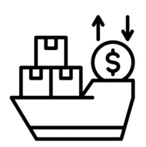
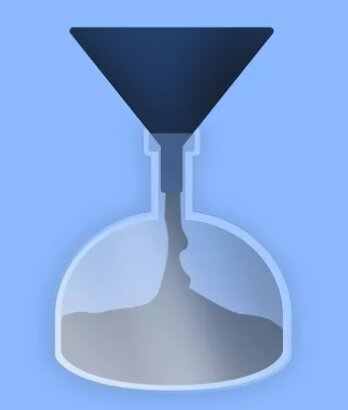
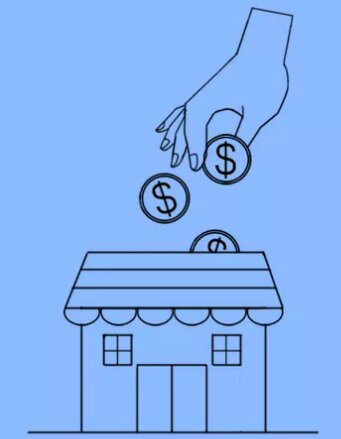

Hulaan ang mga salita na may kinalaman sa Kalakalang Panlabas upang mabuksan ang Lesson 6.



● Palitan ng produkto at serbisyo sa pagitan ng mga bansa.
● Ito ay nagaganap sapagkat walang bansa ang maaaring makatugon sa lahat ng kanyang pangangailangan ng walang tulong mula sa ibang bansa.
● Bilateral: 2 bansa (hal. U.S at PH)
● Bloc: Organisasyon at 1 bansa (hal. APEC at PH)
● EKSPORT (Pagluluwas): pagpapadala ng mga produkto at serbisyo sa ibang bansa.
● IMPORT (Pag-aangkat): pagbili ng kalakal mula sa ibang bansa.
1. Pagkakaiba ng Teknolohiya
2. Pagkakaiba sa Pinagkukunang Yaman
3. Pagkakaiba sa Panlasa
4. Pagkakaiba sa Halaga ng Produksyon
A. Taripa/Tariff:
- Buwis sa mga produktong inaangkat.
- Nagpapataas ng presyo at nagpapababa ng benta.
- Nagpapataw ng mataas na taripa upang mapigil ang pagpasok ng dayuhang produkto.
B. Kota (Quota):
- Limitahan ang pagpasok ng kalabang produkto.
C. Subsidy:
- Tulong ng gobyerno upang bumaba ang halaga ng produksyon ng lokal na produkto.
● Absolute Advantage: Nakakalikha ng mas maraming produkto gamit ang mas kaunting salik kumpara sa ibang bansa.
● Comparative Advantage: Espesyalisasyon sa paglikha ng kalakal; mas efficient kumpara sa ibang bansa.
● Kalagayan ng kabayaran ng export at import.
● Trade Deficit: import > export
● Trade Surplus: export > import
Kabutihan: Mas maraming produkto, mas mataas na kalidad, pagkakaunawaan ng mga mamamayan, lumalawak ang pamilihan.
Di-Kabutihan: Nagiging palaasa sa imported, hindi nalilinang ang pagkamalikhain, pagkawala ng sariling pagkakakilanlan.
World Trade Organization (WTO)
● Pinasinayaan noong Enero 1, 1995.
● Namamahala sa global trading system.
● Layunin: pababain ang trade barriers, platform para sa negosasyon, trade sanction sa hindi sumunod.
Asia-Pacific Economic Council (APEC)
● Itinatag Nobyembre 1989.
● Layunin: liberalisasyon ng kalakalan at pamumuhunan, pagpapadali ng negosyo, pagtutulungang pang-ekonomiya.
ASEAN
● Itinatag Agosto 8, 1967.
● Layunin: malayang kalakalan sa bawat kasapi at dialogue partner, ASEAN Free Trade Area (AFTA) noong 1992, CEPT para alisin taripa at quota.
a. Liberalisasyon sa Sektor ng Pagbabangko (R.A 7721)
b. Foreign Trade Services Corps (FTSC)
c. Trade and Industry Information Center (TIIC)
d. Center for Industrial Competitiveness
Liberalisasyon, Deregulasyon, Dolyar, Pribatisasyon, Balance of Payment, Dumping, Kota/Quota.